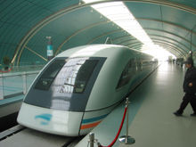

Трансрапид Шанхай, в Китай наричан шанхайския МАГЛЕВ влак или още Cixuanfulieche (на китайски 磁悬浮列车), се нуждае от седем минути и осемнадесет секунди, за да премине тридесет километровото трасе. След три минути и половина (изминатият път възлиза на дванадесет километра и половина) се достига най-високата функционална скорост от 430 km/h. Тя се поддържа в рамките на петдесет секунди преди да се навлезе във фазата на закъснително движение, като спирачният път е отново дванадесет километра и половина. В този случай средната скорост на влака върху втората отсечка възлиза на 247 km/h. Междувременно, при повечето ежедневни пътувания (47 от общо 59 във всяка посока), максималната скорост е намалена на 300 km/h, като по този начин необходимото време за преминаване на пътя, се увеличава на осем минути и десет секунди. Най-високата скорост от 430 km/h (този статус е налице от август 2013 г.) се развива само сутрин и следобед, съответно по време на 45-минутни времеви пролуки Трансрапид се движи по линията ежедневно по 14 часа и може да превозва на всяко пътуване до 440 пасажери. Средно всеки ден са били транспортирани (статус от края на 2007 г.) около 7500 пътници. Обикновеният превоз във втора класа струва 50 йени или 6 евро, като при представяне на валиден самолетен билет цената е 40 йени. Това е десетократно стойността на едно вътрешноградско пътуване, съдържащо между 5 и 7 спирки с метрото или 2,5 пъти цената на билетите за летищните автобуси, свързващи вътрешността на града директно с летището Пудонг. Трасето има дефицит на медийни репортажи, поради ниските нива на употреба. WeltOnline споменава на 20 януари 2009 г. по предложение на ChinaBusinessJournal, за загубата за разработчиците на проекта, възлизаща на поне 100 милиона евро до края на 2007 г. и също така за експлоатационно равнище, бидещо под 20% от очакваното
